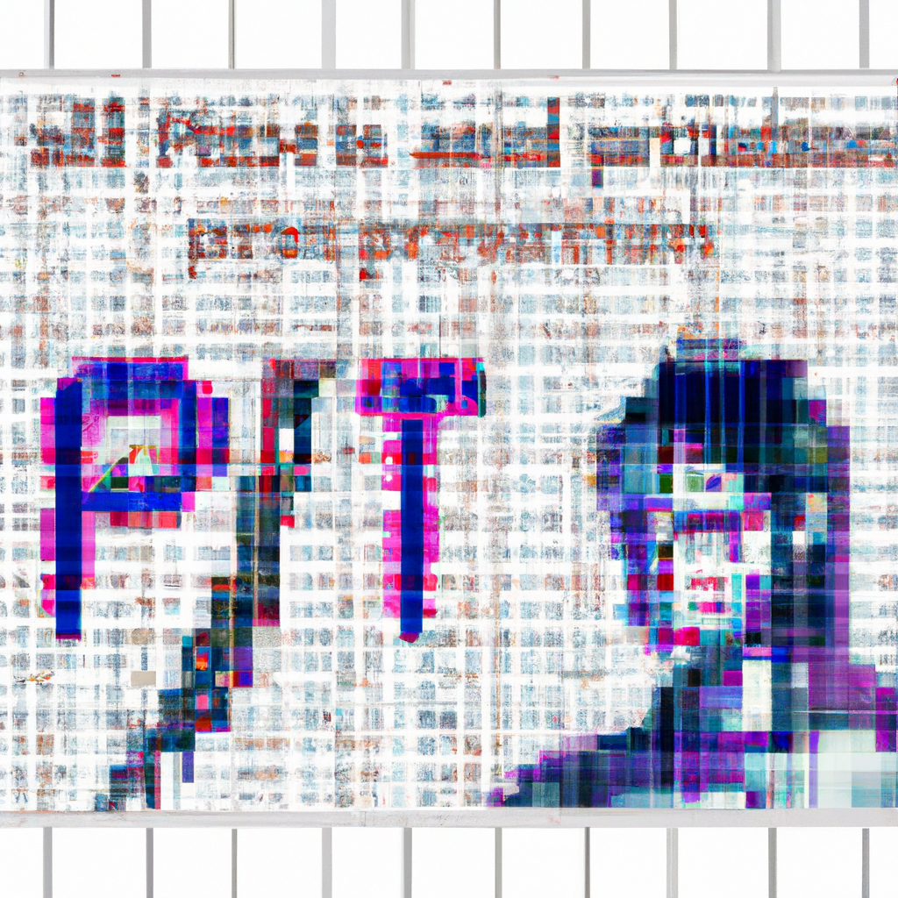

!
The Future of Python, AI and GPT-4

The Future of Python, AI and GPT-4
The future of Python, AI, and OpenAI GPT-4 is an exciting one. Python, as a programming language, has become increasingly popular for AI applications, including for training models. OpenAI GPT-4 is a powerful AI system that can generate natural language, and has been used to create AI-generated applications and to generate new ideas.
Python is a great language for AI because of its ability to access the vast amount of data available, as well as its wide range of libraries and frameworks. Python has also become increasingly popular because of its use in machine learning, deep learning, and natural language processing.
OpenAI GPT-4 is a powerful AI system that can generate natural language. It has been used to create AI-generated applications, generate new ideas, and even teach computers to write code. GPT-4 has been used in the development of chatbots, image recognition, and even in the development of self-driving cars.
The future of Python, AI, and OpenAI GPT-4 is an exciting one. As the technology continues to advance, more applications will become available, and more possibilities of AI-generated applications will become available. It's an exciting time to be a part of the AI and machine learning revolution, and to help shape the future of AI-generated applications.